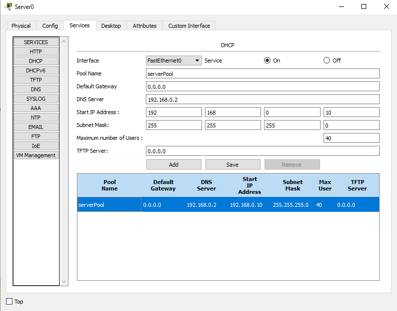
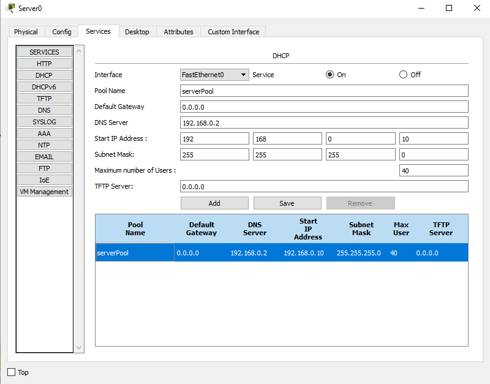
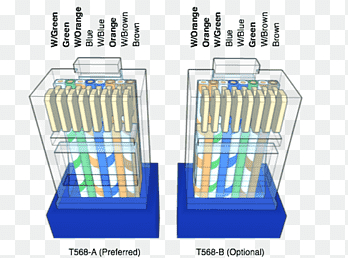
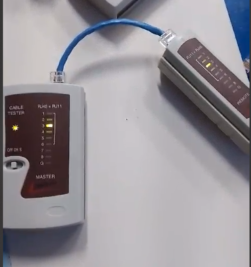

REDES
Elementos, componentes e configuração de rede interna na qual servidor web está inserido
Switch: Um switch é um dispositivo de rede utilizado para conectar vários dispositivos dentro de uma mesma rede local (LAN).
Roteador : Um roteador é um dispositivo de rede responsável por encaminhar pacotes de dados entre diferentes redes, geralmente entre redes locais (LANs) e a internet (WAN).
Servidor : Um servidor é um dispositivo de hardware ou software responsável por fornecer serviços, recursos ou dados a outros dispositivos na rede (conhecidos como clientes).
Host : No contexto de redes de computadores, host é qualquer dispositivo que se conecta a uma rede e tem um endereço de rede único, permitindo que se comunique com outros dispositivos.
Cabo de Conexão : Um cabo de conexão é um meio físico utilizado para interligar dispositivos em uma rede de computadores ou entre diferentes dispositivos eletrônicos, como computadores, roteadores, switches, servidores, impressoras, entre outros.
Switch: Um switch é um dispositivo de rede utilizado para conectar vários dispositivos dentro de uma mesma rede local (LAN).
Roteador : Um roteador é um dispositivo de rede responsável por encaminhar pacotes de dados entre diferentes redes, geralmente entre redes locais (LANs) e a internet (WAN).
Servidor : Um servidor é um dispositivo de hardware ou software responsável por fornecer serviços, recursos ou dados a outros dispositivos na rede (conhecidos como clientes).
Host : No contexto de redes de computadores, host é qualquer dispositivo que se conecta a uma rede e tem um endereço de rede único, permitindo que se comunique com outros dispositivos.
Cabo de Conexão : Um cabo de conexão é um meio físico utilizado para interligar dispositivos em uma rede de computadores ou entre diferentes dispositivos eletrônicos, como computadores, roteadores, switches, servidores, impressoras, entre outros.

Redes e Configuração de Servidores
A criação e configuração de uma rede interna em que um servidor web (HTTP), um servidor DNS e um servidor DHCP estão inseridos envolve diversos elementos e componentes de rede, que podem ser simulados utilizando ferramentas como o Cisco Packet Tracer. Abaixo, vamos detalhar os conceitos e a configuração necessária para o funcionamento desses servidores, além de fornecer um panorama geral dos equipamentos de rede e sua função.
A criação e configuração de uma rede interna em que um servidor web (HTTP), um servidor DNS e um servidor DHCP estão inseridos envolve diversos elementos e componentes de rede, que podem ser simulados utilizando ferramentas como o Cisco Packet Tracer. Abaixo, vamos detalhar os conceitos e a configuração necessária para o funcionamento desses servidores, além de fornecer um panorama geral dos equipamentos de rede e sua função.
Equipamentos e Suas Funções e Conceito de Servidor
Roteador: Encaminha pacotes entre redes diferentes (por exemplo, entre a rede local e a internet).
Switch: Conecta dispositivos dentro de uma mesma rede local (LAN) e permite a comunicação interna.
Access Point (AP): Fornece conectividade sem fio aos dispositivos na rede.
Firewall: Controla e monitora o tráfego de dados entre redes, ajudando a proteger contra acessos não autorizados.
Roteador: Encaminha pacotes entre redes diferentes (por exemplo, entre a rede local e a internet).
Switch: Conecta dispositivos dentro de uma mesma rede local (LAN) e permite a comunicação interna.
Access Point (AP): Fornece conectividade sem fio aos dispositivos na rede.
Firewall: Controla e monitora o tráfego de dados entre redes, ajudando a proteger contra acessos não autorizados.
Conceito de Servidor
Um servidor é um dispositivo ou software que fornece serviços ou recursos para outros dispositivos (clientes) em uma rede.
Um servidor é um dispositivo ou software que fornece serviços ou recursos para outros dispositivos (clientes) em uma rede.
Servidores e Suas Funções
Servidor DNS (Domain Name System): O servidor DNS traduz nomes de domínio em endereços IP. Isso permite que os usuários acessem sites usando nomes amigáveis, como "www.exemplo.com", em vez de precisar memorizar os endereços IP numéricos.
Servidor HTTP (HyperText Transfer Protocol): O servidor HTTP é responsável por hospedar páginas web e enviá-las aos navegadores dos usuários quando solicitadas. Ele utiliza o protocolo HTTP para receber requisições de páginas e enviar respostas com o conteúdo solicitado.
Servidor DHCP (Dynamic Host Configuration Protocol): O servidor DHCP atribui automaticamente endereços IP aos dispositivos na rede. Ele elimina a necessidade de configuração manual de endereços, facilitando a administração da rede e a conexão de novos dispositivos.
Servidor DNS (Domain Name System): O servidor DNS traduz nomes de domínio em endereços IP. Isso permite que os usuários acessem sites usando nomes amigáveis, como "www.exemplo.com", em vez de precisar memorizar os endereços IP numéricos.
Servidor HTTP (HyperText Transfer Protocol): O servidor HTTP é responsável por hospedar páginas web e enviá-las aos navegadores dos usuários quando solicitadas. Ele utiliza o protocolo HTTP para receber requisições de páginas e enviar respostas com o conteúdo solicitado.
Servidor DHCP (Dynamic Host Configuration Protocol): O servidor DHCP atribui automaticamente endereços IP aos dispositivos na rede. Ele elimina a necessidade de configuração manual de endereços, facilitando a administração da rede e a conexão de novos dispositivos.
Modelos e Protocólos
Modelo OSI : O Modelo OSI é um modelo de referência teórico que descreve como os dados são transmitidos entre dispositivos em uma rede. Ele é dividido em 7 camadas, desde a Camada Física (que lida com os sinais elétricos e a transmissão de dados) até a Camada de Aplicação (onde ocorrem as interações diretas com os usuários e os programas, como navegadores web).
Modelo TCP/IP : O modelo TCP/IP é a base para a comunicação na internet e tem 4 camadas principais:
Camada de Aplicação: Onde ocorrem as interações com os aplicativos (ex.: HTTP, FTP).
Camada de Transporte: Controla o fluxo de dados e garante que cheguem ao destino (ex.: TCP, UDP).
Camada de Internet: Lida com endereçamento e roteamento de pacotes (ex.: IP).
Camada de Acesso à Rede: Controla a comunicação física entre dispositivos na rede (ex.: Ethernet).
Modelo OSI : O Modelo OSI é um modelo de referência teórico que descreve como os dados são transmitidos entre dispositivos em uma rede. Ele é dividido em 7 camadas, desde a Camada Física (que lida com os sinais elétricos e a transmissão de dados) até a Camada de Aplicação (onde ocorrem as interações diretas com os usuários e os programas, como navegadores web).
Modelo TCP/IP : O modelo TCP/IP é a base para a comunicação na internet e tem 4 camadas principais:
Camada de Aplicação: Onde ocorrem as interações com os aplicativos (ex.: HTTP, FTP).
Camada de Transporte: Controla o fluxo de dados e garante que cheguem ao destino (ex.: TCP, UDP).
Camada de Internet: Lida com endereçamento e roteamento de pacotes (ex.: IP).
Camada de Acesso à Rede: Controla a comunicação física entre dispositivos na rede (ex.: Ethernet).
 

Cabos de Rede - Pinagem
Os cabos Ethernet são usados para conectar dispositivos em uma rede local. O conector mais comum é o RJ45, e a pinagem pode seguir dois padrões: T568A ou T568B. Ambos os padrões definem a ordem dos fios dentro do cabo, mas a escolha entre eles depende da padronização da rede.
Crimpagem de Cabos de Rede:
Oferecemos serviço especializado de crimpagem de cabos de rede, garantindo conexões rápidas e seguras. Com equipamentos de alta qualidade, realizamos a montagem e manutenção de cabos RJ45, atendendo empresas de todos os portes. Conte conosco para otimizar sua infraestrutura de TI com eficiência e confiabilidade.

